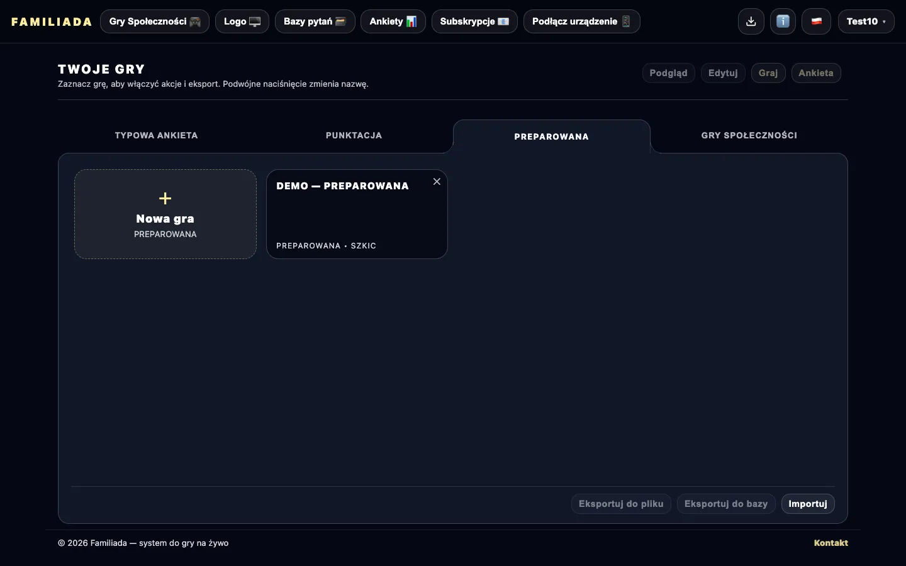
Przygotuj grę. Zbierz wyniki. Poprowadź Familiadę na żywo.
Kompletny system do tworzenia i prowadzenia rozgrywki w stylu Familiada. Przygotuj pytania, zbierz odpowiedzi w sondażu i poprowadź dynamiczną grę z tablicą wyników, panelem operatora oraz osobnym widokiem dla prowadzącego. Wszystko działa w przeglądarce — bez instalacji.
Kliknij, żeby się zalogować lub utworzyć konto.
Jak to działa (krok po kroku)
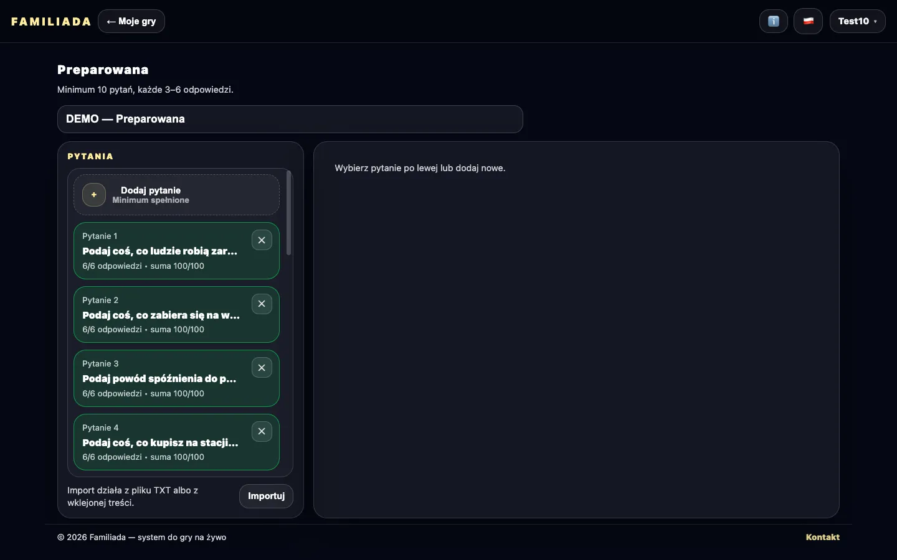
Edycja pytań i (czasem) odpowiedzi
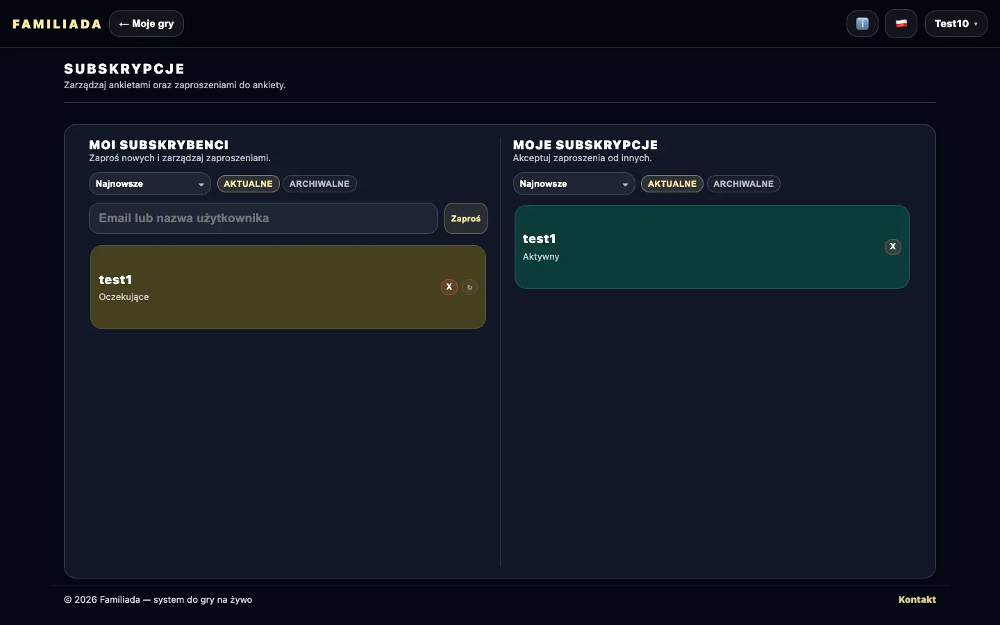
Znajomi i udostępnianie
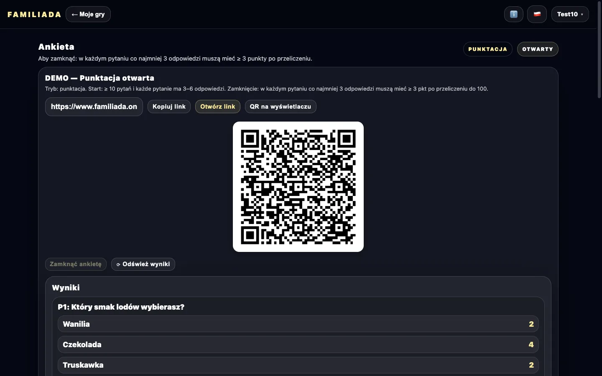
Sondaż: link / QR i zbieranie głosów
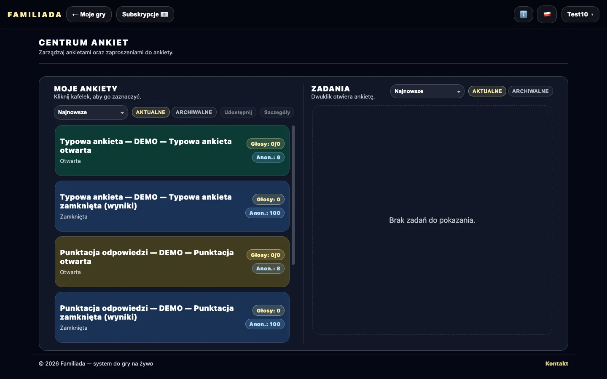
Centrum sondaży
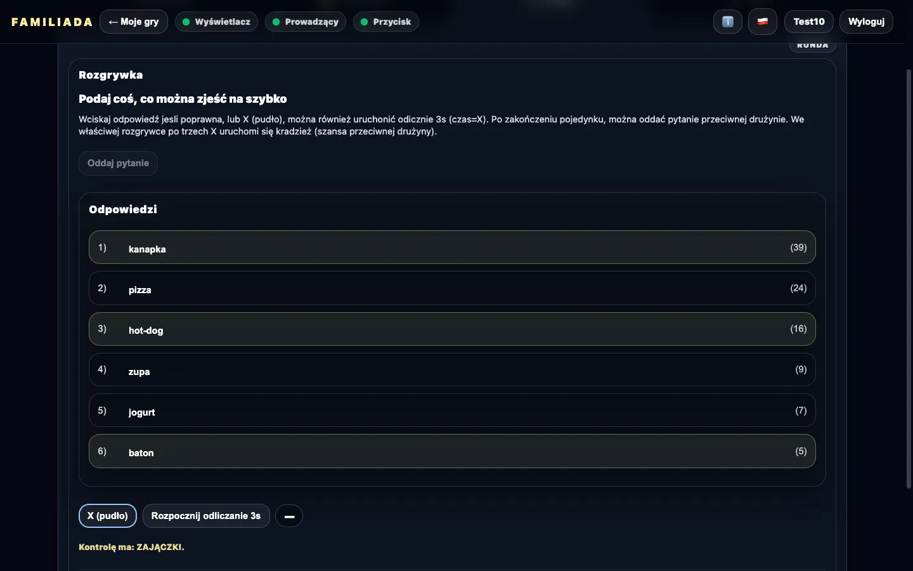
Panel sterowania (operator) — gra na żywo
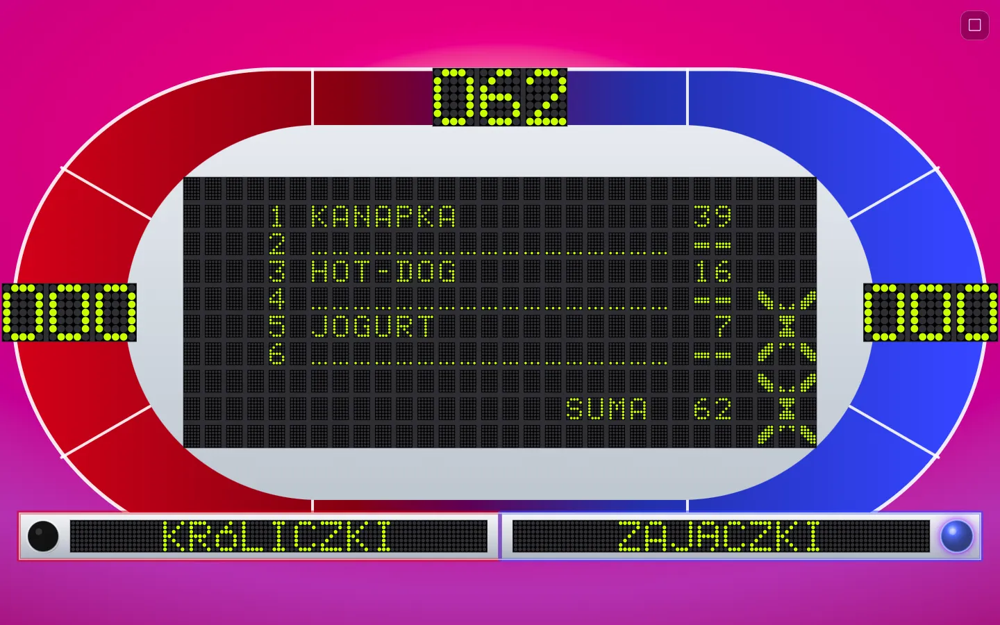
Tablica dla widzów (TV / rzutnik)
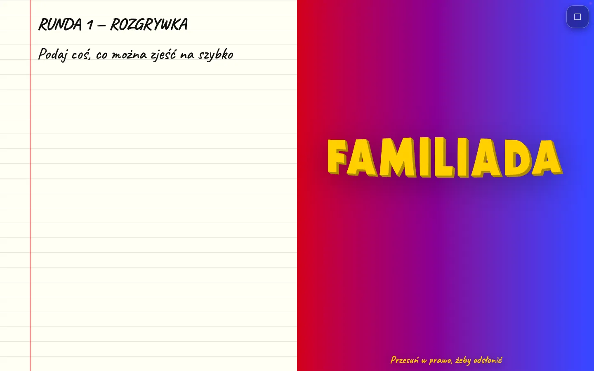
Widok prowadzącego (tablet / telefon)

Przycisk do pojedynku (osobne urządzenie)
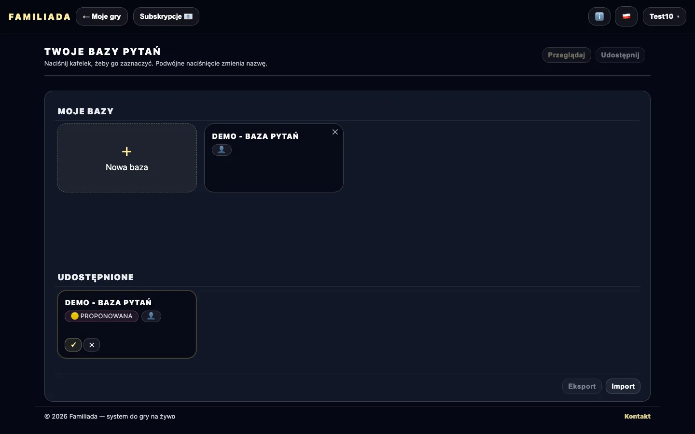
Bazy pytań i współpraca
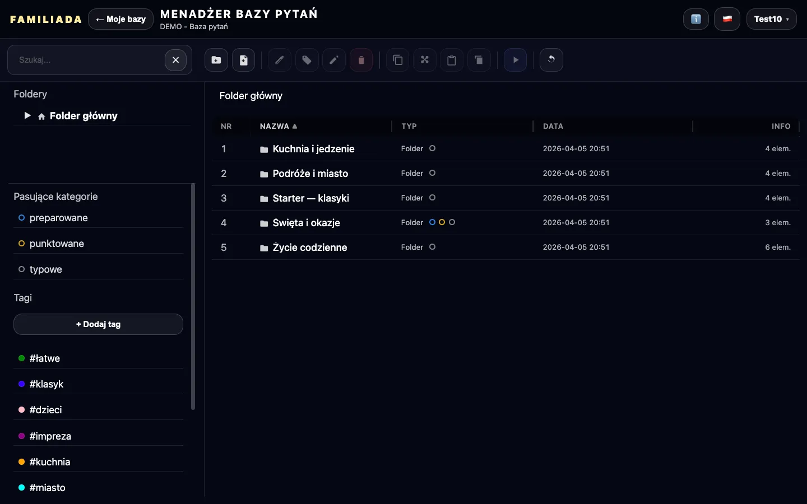
Menadżer pytań jak eksplorator plików
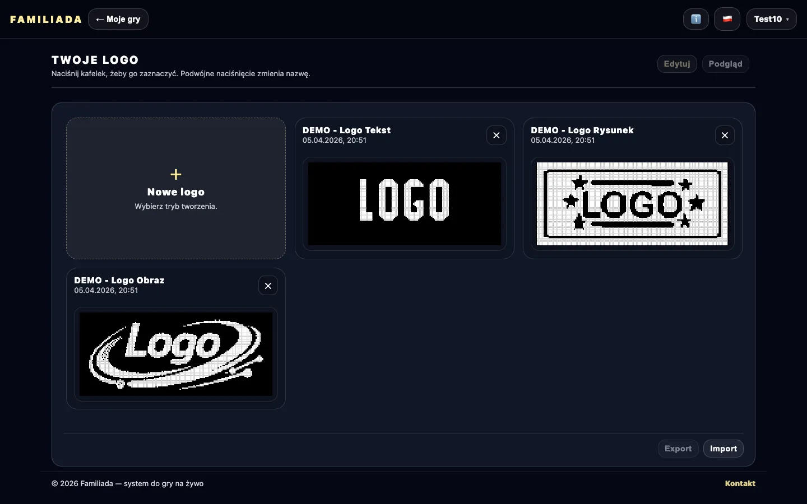
Własne logo na wyświetlaczu
Zastosowanie i możliwości systemu
Narzędzie umożliwia organizację i prowadzenie gry w stylu Familiada podczas wydarzeń firmowych, integracji zespołowych, konkursów szkolnych oraz eventów scenicznych. System wspiera zarówno etap przygotowań, jak i dynamiczną rozgrywkę na żywo.
Dzięki oddzielnym widokom dla operatora, prowadzącego oraz tablicy wyników możesz zachować pełną kontrolę nad przebiegiem gry. Całość działa w przeglądarce — bez instalacji i konfiguracji technicznej.